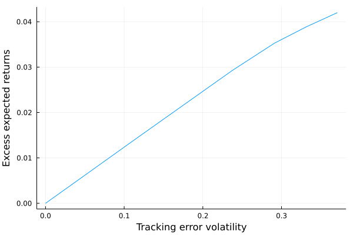
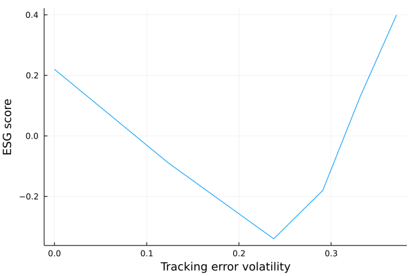

QP Problem for Tilted Portfolios
Portfolio ESG Score
Let's first create a struct Benchmark to store the main informations we have:
Base.@kwdef mutable struct Benchmark
μ::Vector{Float64} # Expected returns
b::Vector{Float64} # benchmark weights
s::Vector{Float64} # ESG Score
Σ::Matrix # Covariance Matrix
end
Σ = [ 0.1536 0.006 0.0108 0.0156 0.024
0.006 0.17 0.018 0.026 0.04
0.0108 0.018 0.1324 0.0468 0.072
0.0156 0.026 0.0468 0.1776 0.104
0.024 0.04 0.072 0.104 0.28]
our_benchmark = Benchmark(μ = [0.03,0.04,0.05,0.07,0.1],
b = [0.2, 0.2, 0.2, 0.2, 0.2],
s= [1.1,2.7,-0.9,-2.2,0.4],
Σ = Σ)Given the ESG scores and the respective weights for each issuer, how to compute the benchmark ESG score?
We have:
\[S^{esg}(b) = \sum^5_{i=1}b_iS^{esg}_i\]
\[= b^TS^{esg}\]
Let's implement it in Julia:
function get_benchmark_score(bench::Benchmark)::Float64
return round(bench.b' * bench.s; digits= 2)
end
get_benchmark_score(our_benchmark) and the result is:
0.22Excess Expected Returns and Tracking Error Volatility
Having the previous benchmark, let's assume a portfolio with the same issuers than the benchmark, but different weights $x$. How can we compare the relative performance of the tilted portfolio compared to the benchmark?
We will compute first the excess expected returns:
\[\mu(x|b) = (x - b)^T \mu\]
and then the tracking error volatility:
\[\sigma(x |b) = \sqrt{(x-b)^T\Sigma(x-b)}\]
Let's implement this:
Base.@kwdef mutable struct TiltedPortfolio
x::Vector{Float64} # Optimal weights
end
portfolio = TiltedPortfolio(x = [0.1, 0.1, 0.3, 0.3, 0.2])
function get_excess_returns(portfolio::TiltedPortfolio, bench::Benchmark)::Float64
return round((portfolio.x - bench.b)' * bench.μ;digits = 5)
end
function tracking_error_volatility(portfolio::TiltedPortfolio, bench::Benchmark)::Float64
return sqrt((portfolio.x - bench.b)' * bench.Σ * (portfolio.x - bench.b))
endLet's find first the excess expected returns:
get_excess_returns(portfolio, our_benchmark)which returns:
0.005and then the tracking error volatiltiy:
tracking_error_volatility(portfolio, our_benchmark)which gives:
0.07735631842325487Standard QP Problem
Recall that the formulation of a standard QP problem is:
\[\begin{equation*} \begin{aligned} & x^* = & & {\text{arg min}} \frac{1}{2}x^TQx-x^TR\\ & \text{subject to} & & Ax = B \\ &&& Cx \leq D \\ &&& x^- \leq x \leq x^+ \end{aligned} \end{equation*}\]
Let's assume an example where we would like to tilt the benchmark $b$ in order to improve its expected return. We have a modified $\gamma$ problem where $\gamma$ is the risk aversion parameter. What we want in this exercise is:
- enhance the excess expected return compared to the benchmark:
\[\mu(x|b)\]
- and minimize the tracking error volatility relative to the benchmark:
\[\sigma^2(x |b)\]
Modified Objective Function
The initial objective function:
\[x^* = \text{arg min} \frac{1}{2}x^TQx-x^TR\]
becomes:
\[x^* = \text{arg min} \frac{1}{2} \sigma^2(x |b) - \mu(x|b)\]
Since we want to formulate the $\gamma$-problem of portfolio optimization, it becomes:
\[x^*(\gamma) = \text{arg min} \frac{1}{2} \sigma^2(x |b) - \gamma\mu(x|b)\]
Finally, since $\sigma^2(x|b)=(x-b)^T \Sigma (x-b)$ and $\mu(x|b) = (x-b)^T \mu$, we have the QP objective function:
\[x^*(\gamma) = \text{arg min} \frac{1}{2} x^T \Sigma x - x^T (\gamma \mu + \Sigma b)\]
Modified Constraints
Let's now reformulate the initial constraints. We first had in the initial QP problem:
\[Ax = B\]
which will become:
\[1^T_nx = 1\]
(i.e. the sum of the weights $x_i$ must sum to one)
We then had:
\[x^- \leq x \leq x^+\]
Which becomes:
\[0_n \leq x \leq 1_n\]
(i.e. the weights $x_i$ must be between 0 and 1)
Let's implement this in Julia:
using JuMP, COSMO # for the optimization
# tilt the benchmark according to gamma
function portfolio_tilting(bench::Benchmark, γ::Float64)::TiltedPortfolio
n = length(bench.μ) # number of assets
model = JuMP.Model(COSMO.Optimizer)
# the optimal weights we want to find
@variable(model, x[1:n])
@objective(model, Min, 1/2 * x' * Σ * x - x' * (γ * bench.μ + bench.Σ * bench.b))
@constraint(model, zeros(n) .<= x .<= ones(n))
@constraint(model, ones(n)' * x == 1)
JuMP.optimize!(model)
portfolio = TiltedPortfolio(x = JuMP.value.(x))
return portfolio
end
# simulate for gammas between 0 and 10
using Plots
gammas = [i for i in 0.0:1:10.0]
excess_returns = zeros(length(gammas))
excess_te = zeros(length(gammas))
esg_scores = zeros(length(gammas))
for i in 1:length(gammas)
new_portfolio = portfolio_tilting(our_benchmark, gammas[i])
excess_returns[i] = get_excess_returns(new_portfolio, our_benchmark)
excess_te[i] = tracking_error_volatility(new_portfolio, our_benchmark)
esg_scores[i] = get_portfolio_score(new_portfolio, our_benchmark)
end
plot(excess_te, excess_returns, xlabel = "Tracking error volatility",
ylabel = "Excess expected returns",
label = "")
plot(excess_te, esg_scores, xlabel = "Tracking error volatility",
ylabel = "ESG score", label = "") 